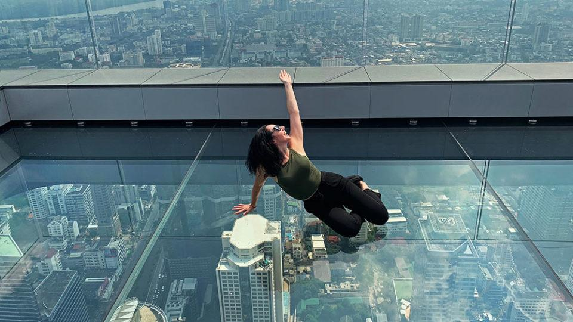
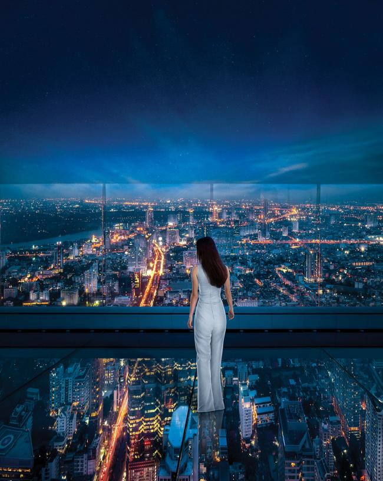
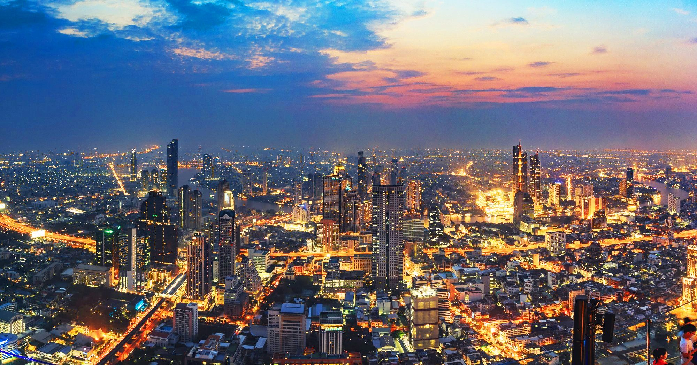
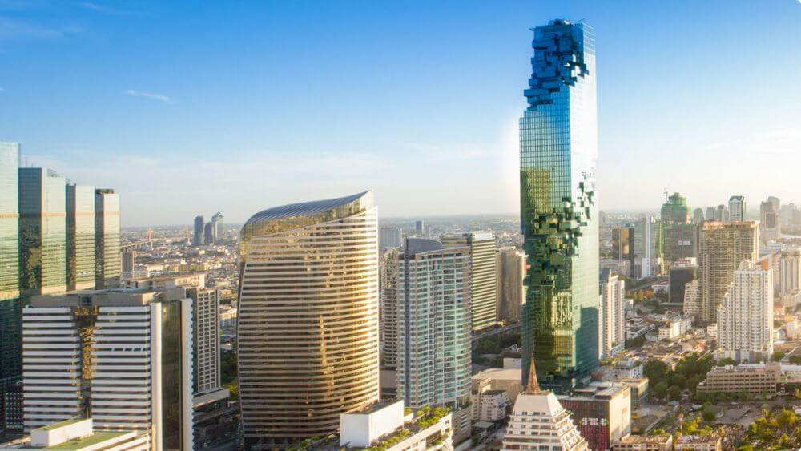
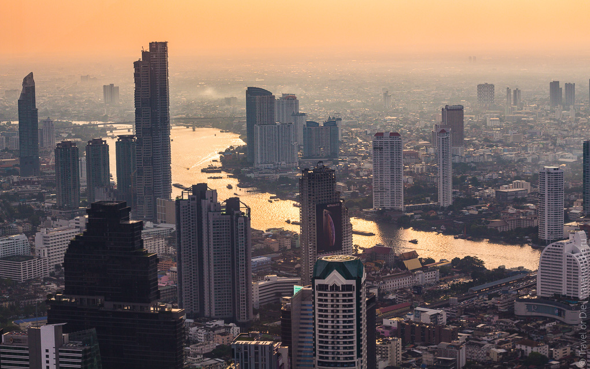
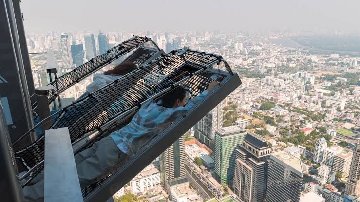
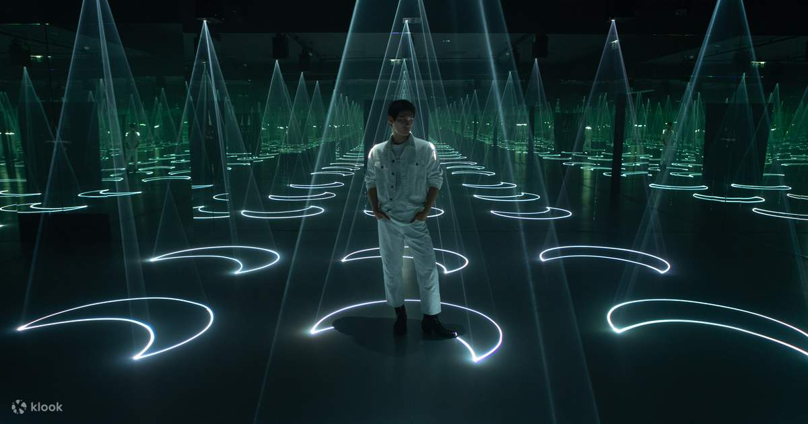

Маханакхон — небоскрёб с лучшим видом на Бангкок

King Power Mahanakhon — один из самых необычных небоскрёбов Бангкока и одна из главных современных достопримечательностей города. Здание легко узнать благодаря необычному дизайну: кажется, будто часть фасада здания состоит из огромных пикселей, которые вырезаны из башни.
Главная достопримечательность Маханакхона — Mahanakhon SkyWalk, расположенная на верхних этажах здания. Отсюда открывается панорамный вид на Бангкок, а на высоте 310 метров находится знаменитая стеклянная площадка.
На самой высокой точке SkyWalk посетители находятся на высоте около 314 метров над землёй. Это один из лучших вариантов для тех, кто хочет увидеть огромный Бангкок с высоты.
Где находится
King Power Mahanakhon находится в районе Silom, в центральной части Бангкока.
Адрес здания: 114 Naradhiwas Rajanagarindra Rd, Si Lom, Bang Rak, Bangkok 10500, Thailand
Небоскрёб находится практически рядом со станцией наземного метро BTS Chong Nonsi, поэтому добраться сюда достаточно легко. Рядом также находятся деловые районы Silom и Sathorn, многочисленные рестораны, торговые центры и другие современные здания Бангкока.
Стоимость посещения
Основная достопримечательность — Mahanakhon SkyWalk.
Стоимость взрослого билета зависит от времени посещения:
- 10:00–15:30 — 1000 бат;
- 15:30–19:00 — 1200 бат.
Для детей и пожилых людей действуют отдельные тарифы. Важно учитывать, что дополнительные развлечения, например Mahanakhon Bangkok I-Tilt, оплачиваются отдельно. Стоимость билетов и условия посещения могут изменяться, поэтому перед поездкой лучше проверить актуальные цены.
Время работы
Mahanakhon SkyWalk работает ежедневно с 10:00 до 00:00.
Лучшее время для посещения — ближе к вечеру. В это время можно увидеть Бангкок при дневном свете, встретить закат, а затем посмотреть на город, когда загораются многочисленные огни. Последний вход осуществляется в 23:00.
Как добраться
BTS
Самый удобный способ — воспользоваться наземным метро BTS.
Нужно доехать до станции Chong Nonsi на линии Silom.
После выхода со станции нужно воспользоваться Exit 3. Маханакхон находится совсем рядом.
Это один из самых удобных способов добраться до небоскрёба, особенно в часы пробок.
Такси или Grab
До King Power Mahanakhon можно также доехать на такси или воспользоваться приложением Grab.
Однако в центральном Бангкоке часто бывают пробки, поэтому BTS обычно является более предсказуемым вариантом.
Пешком
Если вы уже находитесь в районе Silom или рядом со станцией Chong Nonsi, до здания можно легко дойти пешком.
Что посмотреть внутри
Маханакхон — это не только смотровая площадка. Внутри здания находится несколько различных развлечений, однако главной достопримечательностью остаётся SkyWalk.
Mahanakhon SkyWalk

Mahanakhon SkyWalk — главная достопримечательность небоскрёба. На 74-м этаже находится закрытая смотровая площадка с панорамными окнами. Отсюда открывается обзор на Бангкок практически на 360 градусов. На верхних этажах находится открытая часть смотровой площадки, где можно выйти на улицу и увидеть город без стекла между вами и горизонтом.
Стеклянная площадка

Одно из самых известных мест Маханакхона — Glass Floor. Это стеклянная площадка, расположенная на высоте около 310 метров над землёй. Посетители могут выйти на прозрачный пол и посмотреть прямо вниз на улицы Бангкока. Для многих туристов это одна из самых впечатляющих частей посещения, особенно если вы не боитесь высоты.
The Peak
The Peak находится на высоте около 314 метров и является самой высокой точкой смотровой площадки. Отсюда открывается панорамный вид на огромный Бангкок. В хорошую погоду можно увидеть город на большое расстояние. Это одно из лучших мест для фотографий во всём Маханакхоне.
Вид на Бангкок



С вершины Маханакхона можно увидеть совершенно разные районы Бангкока. Рядом находятся современные небоскрёбы, а вдалеке можно увидеть старые районы города, храмы и другие достопримечательности. Особенно хорошо заметен контраст между современной архитектурой центра Бангкока и более низкой застройкой исторических районов.
Mahanakhon Bangkok I-Tilt

Mahanakhon Bangkok I-Tilt — экстремальный аттракцион на 75-м этаже. Участник оказывается на высоте около 296 метров и наклоняется за край здания примерно под углом 65 градусов. Это развлечение предназначено для тех, кто хочет получить гораздо больше эмоций, чем просто от обычной смотровой площадки. Аттракцион оплачивается отдельно, а для участия необходимо иметь действующий билет на Mahanakhon SkyWalk.
Mahanakhon SkyVerse

Mahanakhon SkyVerse — интерактивное цифровое пространство, объединяющее технологии, виртуальную реальность и искусство. Оно находится внутри здания и может стать интересным дополнением к посещению SkyWalk, особенно если вы путешествуете с детьми.
Что находится рядом
Маханакхон расположен в одном из современных центральных районов Бангкока, поэтому рядом находится большое количество ресторанов, торговых центров и других интересных мест.
Silom
Один из главных деловых районов Бангкока. Днём здесь особенно заметна современная сторона города: небоскрёбы, офисы, рестораны и торговые центры. Вечером район становится более оживлённым и превращается в популярное место для прогулок и развлечений.
Lumphini Park

Парк Люмпини — один из самых известных парков Бангкока. Он находится недалеко от района Silom и является хорошим местом для прогулки после посещения небоскрёба. Вместо небоскрёбов и шумных улиц здесь можно увидеть большое количество зелени, озеро и места для отдыха.
ICONSIAM
ICONSIAM находится на другом берегу реки Чао Прайя. При желании посещение Маханакхона можно объединить с поездкой к реке и вечерней прогулкой по ICONSIAM.
Река Чао Прайя
Река Чао Прайя находится относительно недалеко от Маханакхона. После посещения небоскрёба можно отправиться к реке и продолжить прогулку на речном транспорте.
Важное для туристов
Лучше приезжать ближе к закату. В таком случае можно увидеть Бангкок сразу в нескольких вариантах: днём, во время заката и ночью.
Проверьте погоду. Значительная часть SkyWalk находится на открытом воздухе. Во время дождя или плохой погоды некоторые открытые развлечения могут быть временно закрыты.
Не забывайте про высоту. Если вы боитесь высоты, стеклянная площадка может оказаться довольно сильным впечатлением.
Не пытайтесь снимать на стеклянной площадке с опасным положением телефона. Лучше использовать ремешок или крепко держать устройство.
Учитывайте время посещения при покупке билета. Билеты на SkyWalk стоят по-разному в зависимости от времени, а период перед закатом является более дорогим.
Дополнительные развлечения оплачиваются отдельно. Не каждый билет включает I-Tilt, SkyVerse или другие аттракционы.
На открытой площадке может быть ветрено. Особенно это заметно на верхних этажах.
Как лучше провести время в Маханакхоне
Лучше всего приехать во второй половине дня, чтобы успеть осмотреть здание до наступления темноты.
Например:
- 16:00 — приезд к King Power Mahanakhon;
- 16:15 — подъём на смотровую площадку;
- 16:30 — осмотр панорамы Бангкока;
- 17:00 — стеклянная площадка;
- 17:30 — The Peak;
- 18:00 — закат над Бангкоком;
- 18:30 — фотографии ночного города;
- 19:00 — I-Tilt или другие развлечения;
- 20:00 — ужин или прогулка по району Silom.
Такой маршрут позволяет увидеть Бангкок и днём, и во время заката, и ночью.
Что запомнить
Маханакхон — одно из лучших мест для знакомства с современным Бангкоком с высоты. Главная причина приехать сюда — Mahanakhon SkyWalk с панорамным видом на город, стеклянной площадкой на высоте 310 метров и самой высокой точкой The Peak на высоте около 314 метров.
Если Ват Арун показывает исторический Бангкок, Чао Прайя позволяет увидеть город с воды, а Чатучак — его торговую и повседневную сторону, то Маханакхон показывает современный Бангкок с высоты .
Лучший вариант — приехать ближе к вечеру, встретить закат на вершине небоскрёба, а затем посмотреть на огромный город, полностью освещённый ночными огнями.